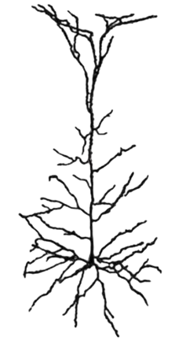
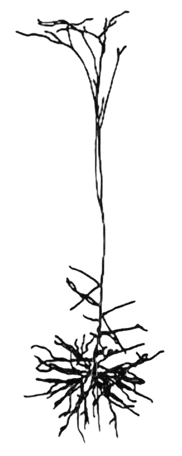
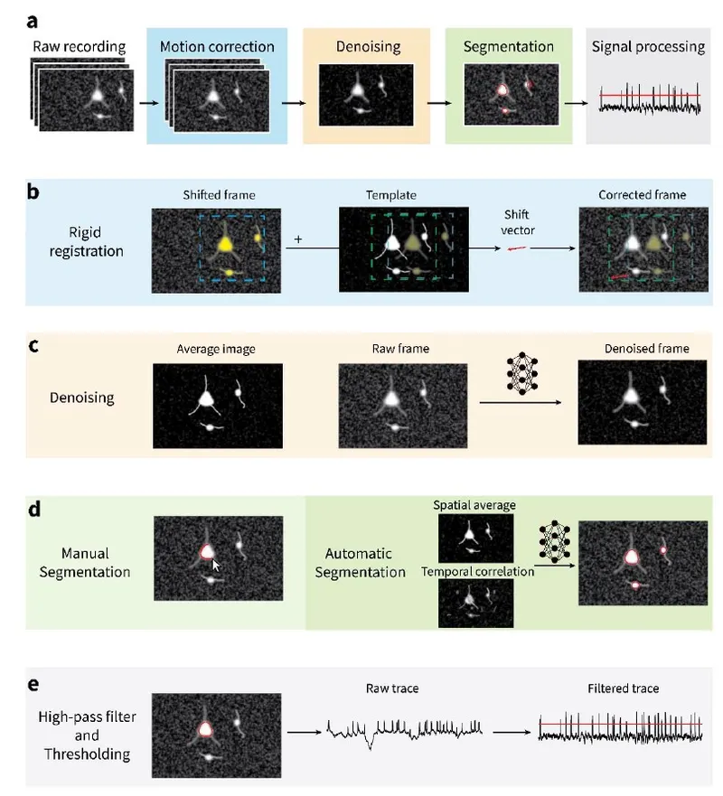
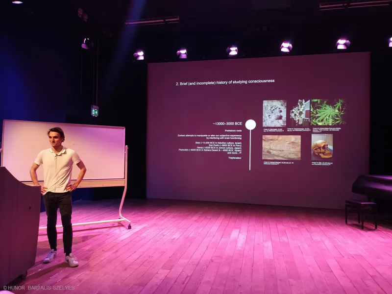
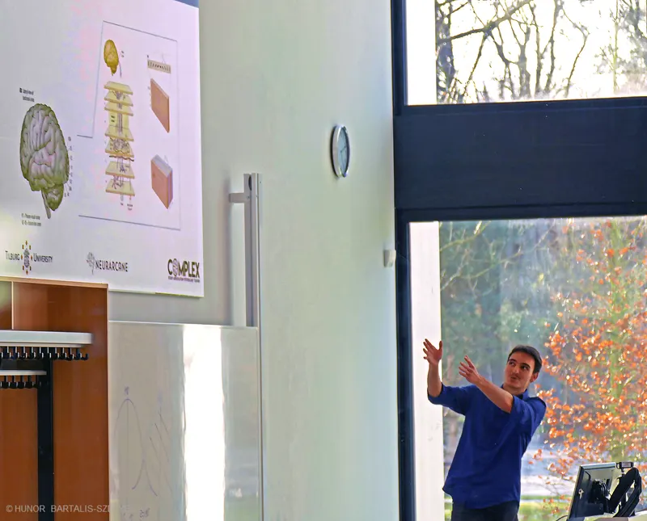
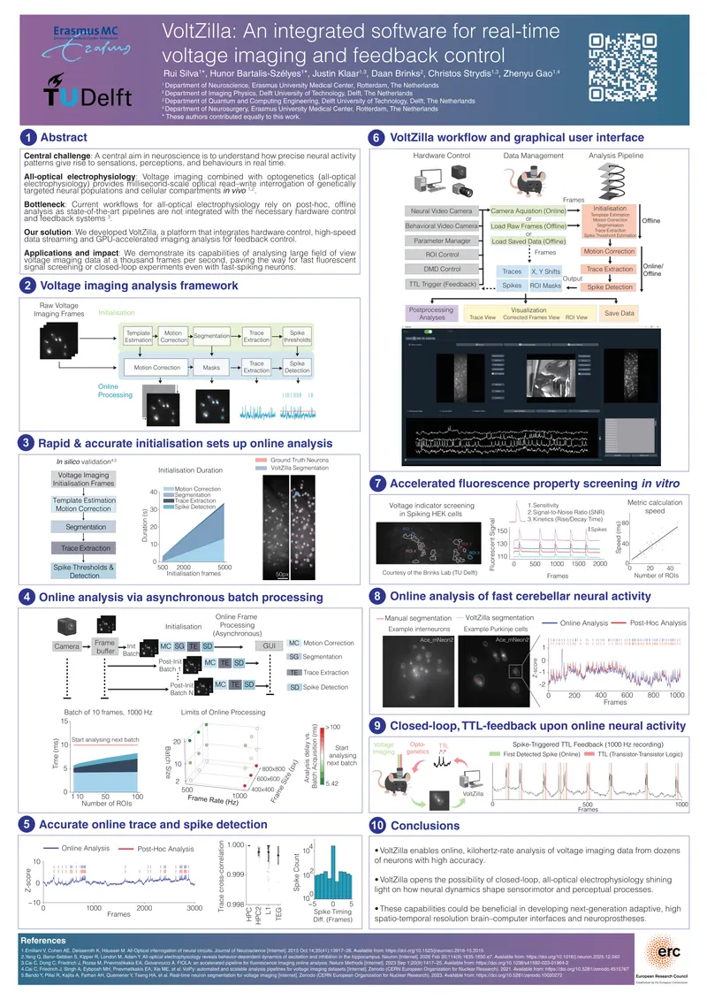
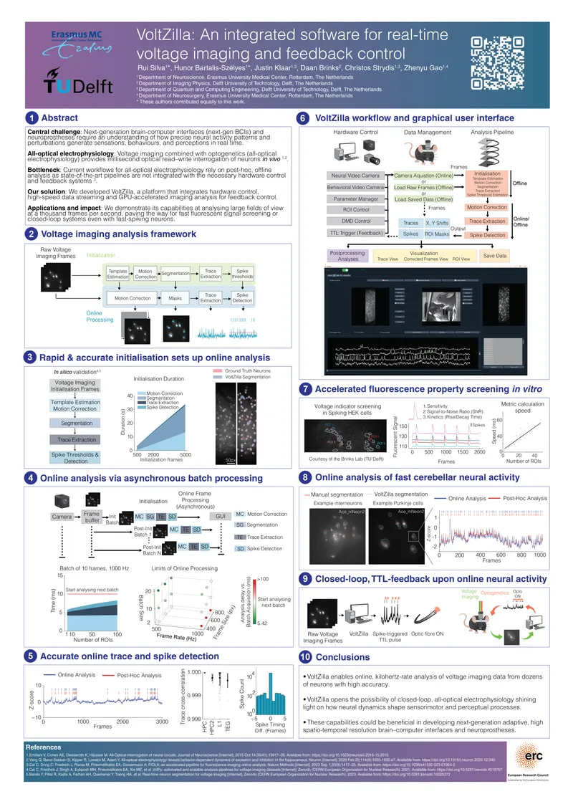
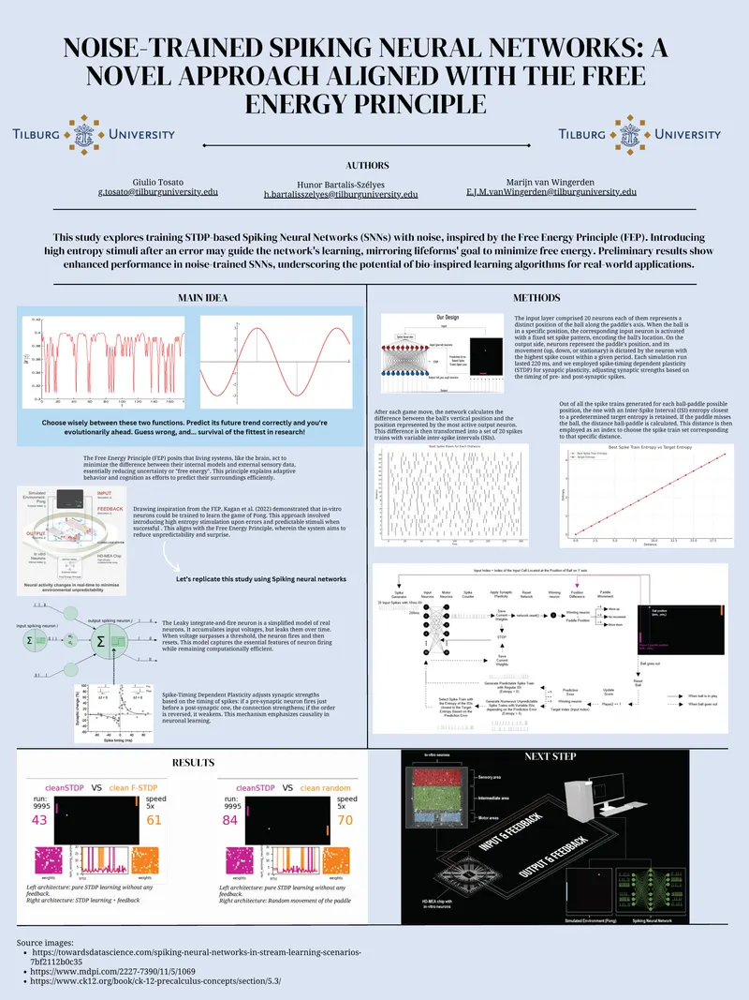
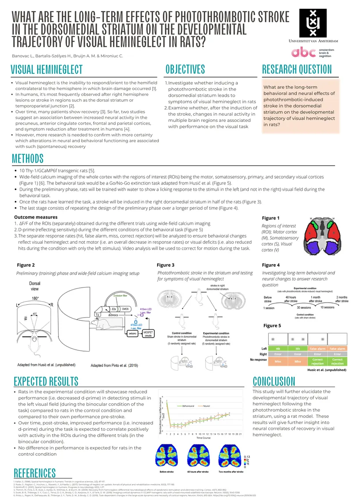

HUNOR BARTALIS-SZÉLYES
Neuroscience · Machine Learning
Restoring neural functions via
all-optical neural interfaces.
“My work aims to combine voltage imaging, optogenetics, and machine learning to decode and manipulate neural dynamics through light, paving the way for next-generation brain-computer interfaces and neuroprostheses.”
See my workSelected Work
Publications

Presentations
Talks

2025 · Tilburg University
A New Age of Consciousness Research: Novel Techniques for a Millennia-Old Question

2023 · Tilburg University
The Visual and Auditory Systems
Conference Work
Posters

2026 · Dutch Neuroscience Meeting 2026
VoltZilla: An integrated software for real-time voltage imaging and feedback control
* Co-first authorship

2026 · AIMD Workshop 2026
VoltZilla: An integrated software for real-time voltage imaging and feedback control
* Co-first authorship

2023 · Advances in NeuroAI Conference
Noise-Trained Spiking Neural Networks: A Novel Approach Aligned with the Free Energy Principle
* Co-first authorship

2022 · ABC Summer School
Long-Term Effects of Photothrombotic Stroke in the Dorsomedial Striatum on the Developmental Trajectory of Visual Hemineglect in Rats
* These authors contributed equally to this work.
Recognitions
Awards
2026 · Dutch Neuroscience Meeting